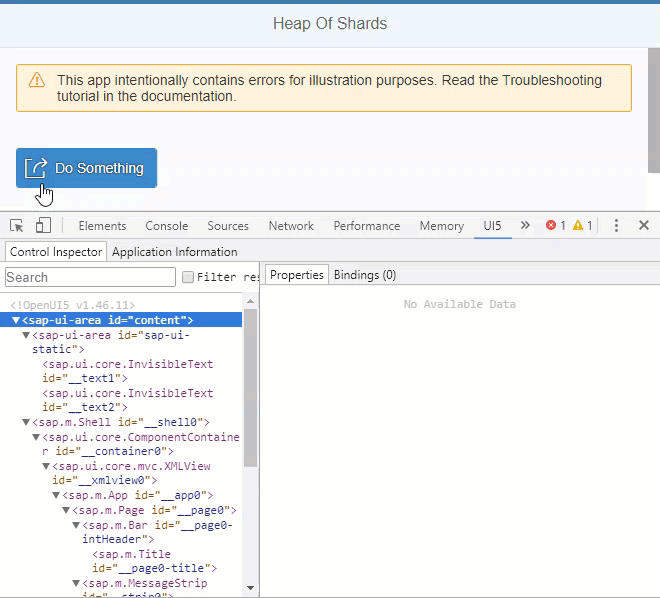

With UI Inspector, you can find answers to the following questions, for example:
What is the structure of your app?
How are the elements related to each other?
Which controls are involved when a function is performed?
Which data is bound to a specific control and how (model and path)?
UI5 Inspector is only available for browsers, like Google Chrome and Microsoft Edge (Chromium), that support standard extensions from the Chrome Web Store.

Add the UI5 Inspector as a standard extension to your Chromium-based browser from the Chrome Web Store.
Download the example app with errors from the Demo Kit at Troubleshooting and run the app.
Open the Developer Tools in Google Chrome by pressing F12.
Choose the UI5 tab on the right side of the developer tools panel.
Choose Control Inspector.
You now see a list of all of the controls that are used in the current view of the app. When you select an entry, you see the properties and their values in the Properties area on the right. You can analyze line by line without being overwhelmed by too much information.
The app contains a Do Something button with meaningless icon
(sap-icon://action) and text. We want to use the
sap-icon://activate icon instead and change the text. With UI
Inspector, we want to simulate how that will effect the UI change.
Right-click the Do Something button and from the context menu select Inspect UI5 Control.
The corresponding line in the Control Inspector is highlighted and you can view its properties.
Double-click the value for the icon property, which is
currently sap-icon://action.
Replace action with activate and confirm
with Enter.
The icon on the button in the app is updated to show the new icon .
Double-click the value for the text property and change the
value to Activate.
The changes that you make in the UI5 Inspector are only temporary, and the icon will be reset to the default when the page is reloaded. To make your change permanent, you have to change the app code.